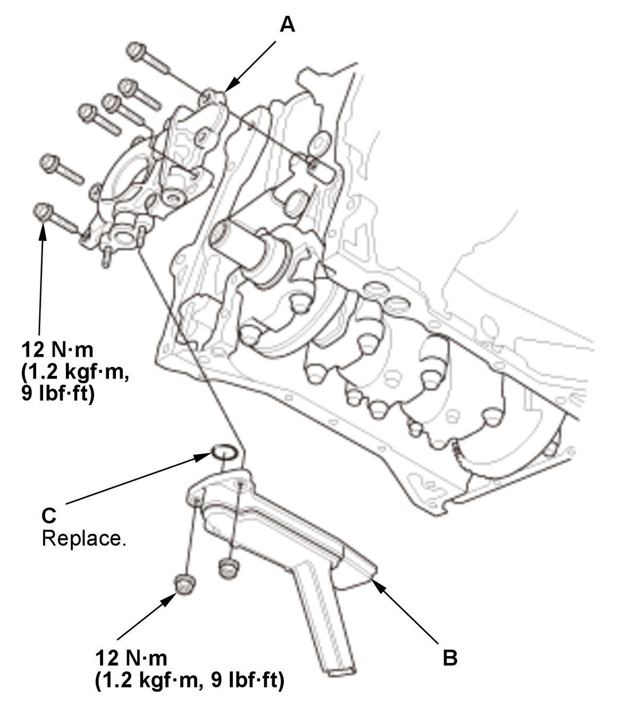

Engine Oil Pump Removal and Installation (1.5L Engine): Installation
- Oil Pump - Install

Courtesy of HONDA, U.S.A., INC.1. Install the oil pump (A). 2. Install the oil strainer (B) with a new O-ring (C).
- Oil Pan - Install
- Engine - Support
1. Lift and support the engine with a jack and a wood block under the oil pan. - Engine Support Hanger and Universal Lifting Eyelet - Remove
- Cam Chain Drive Sprocket - Install
1. Install the cam chain drive sprocket (A) and the key (B). - Cam Chain - Install
- Turbocharger Joint and Turbocharger Joint Bracket B - Install
- 12 Volt Battery - Install
- Air Cleaner - Install
- Front Grille Cover - Install
- Engine Oil - Refill